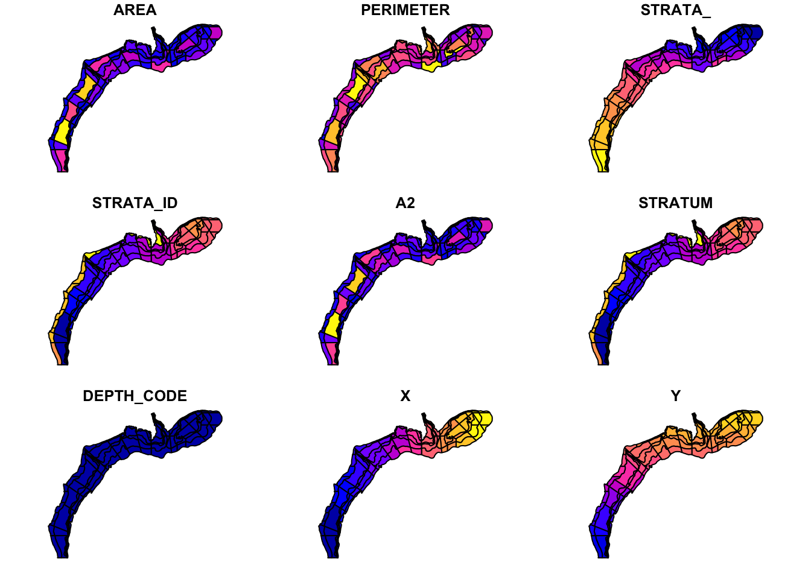
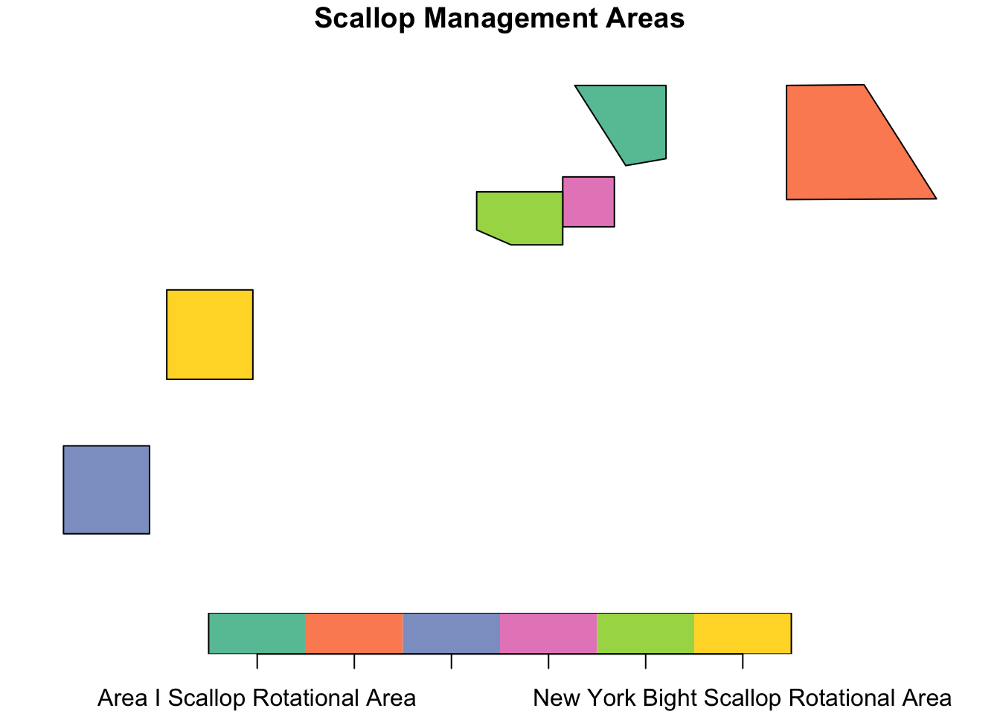
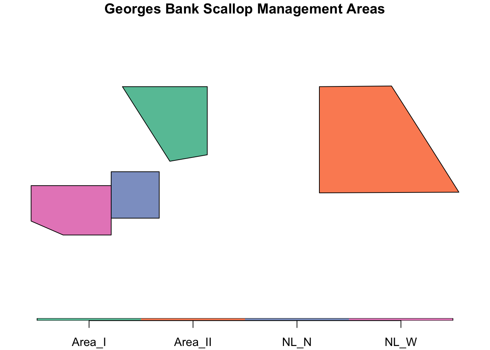

library(sf)
library(NEFSCspatial)
library(tidyverse)
scallops<-NEFSCspatial::Shellfish_Strata
plot(scallops)
testGIS<-st_read("~/Downloads/lab_notebook/data/Scallop_Rotational_Areas_20230419/Scallop_Rotational_Areas_20230411.shp")Reading layer `Scallop_Rotational_Areas_20230411' from data source
`/Users/rubykrasnow/Downloads/lab_notebook/data/Scallop_Rotational_Areas_20230419/Scallop_Rotational_Areas_20230411.shp'
using driver `ESRI Shapefile'
Simple feature collection with 6 features and 23 fields
Geometry type: POLYGON
Dimension: XY
Bounding box: xmin: -8274749 ymin: 4602998 xmax: -7333888 ymax: 5087139
Projected CRS: WGS 84 / Pseudo-Mercatorplot(testGIS["AREANAME"], main="Scallop Management Areas")
testGB <- testGIS %>%
filter(GARFO_ID != "G000610" & GARFO_ID != "G000611") %>%
select(AREANAME, GARFO_ID, CFRPARA, FRCITE, FRDATE, SOURCE, COMMNAME, geometry) %>%
mutate(NAME = recode(AREANAME, "Area I Scallop Rotational Area" = "Area_I", "Area II Scallop Rotational Area" = "Area_II", "Nantucket Lightship North Scallop Rotational Area" = "NL_N","Nantucket Lightship West Scallop Rotational Area" = "NL_W"))
plot(testGB["NAME"], main="GB Scallop Management Areas", key.pos=1, key.width = 0.1, key.length = 0.9)